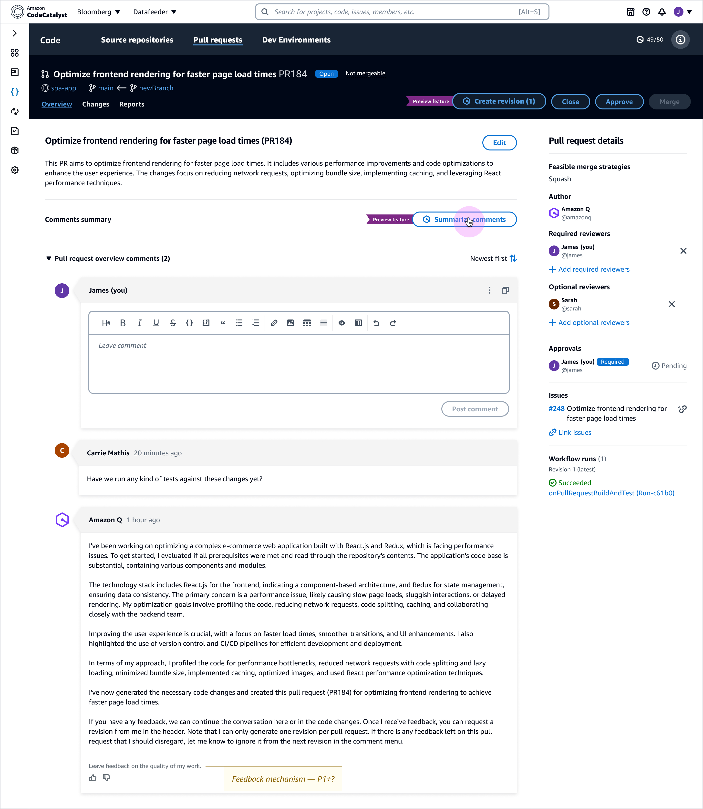

Case Study
Amazon Q in Developer Workflow
Integrated Amazon Q into Amazon CodeCatalyst to support AI-assisted issue creation, task planning, and pull request review— designed to make AI activity visible, reviewable, and easy for developers to control.
Context
Amazon CodeCatalyst is a developer platform where issues, planning, and pull requests translate directly into production code. This work focused on integrating Amazon Q into these workflows in a way that supports automation without eroding trust, ownership, or review discipline.
The core design challenge wasn’t adding AI capability—it was shaping how Amazon Q participates: when it can operate in the background, how progress is communicated, and where human review remains explicit.
My role
Lead designer for Amazon Q workflow integration patterns in CodeCatalyst—partnering with product, engineering, research, and applied science to make AI actions attributable, understandable, and reversible in core developer flows.
- Designed AI-assisted workflows for issue creation, task execution, and pull request review
- Defined interaction patterns balancing visibility, trust, and cognitive load
- Designed failure states and recovery paths without breaking developer momentum
- Ensured AI actions remained reviewable, reversible, and clearly attributable
- Collaborated with product, engineering, research, and applied science
Constraints
- Source of truth: The diff and discussion remain primary; AI assistance must point back to them.
- Accountability: AI-generated content must be labeled and attributable to avoid confusing authorship.
- Trust expectations: Dev workflows require explicit review gates—especially when code changes are proposed.
- Time-scoped guidance: Summaries must reflect freshness and update when new signals arrive.
- Permissions & limits: Usage, access, and scope are part of the UX and must be discoverable.
Problem
AI can accelerate planning and review—but it can also create risk if its actions are opaque, overly “complete,” or hard to verify. The goal was to embed Amazon Q directly into key CodeCatalyst moments (issues, execution planning, PRs) while preserving developer control: clear scoping, visible progress, explicit decision points, and actionable recovery when something blocks.
Approach
I designed a set of reusable patterns to make AI participation feel predictable: (1) familiar entry points, (2) a single trust surface for progress and decisions, (3) first-class failure states, and (4) guardrails that keep review discipline intact.
Key initiatives
1) Assigning issues and epics to Amazon Q
Issue creation is a natural entry point: developers already describe intent, but translating that intent into structured, executable work takes time. The opportunity was to allow teams to assign issues (and epics) to Amazon Q to generate plans and code— without overwhelming users with internal detail.
A key tension emerged early: showing too much internal AI data reduced validation—developers were less likely to review output when the interface looked “too complete” or overly technical. Showing too little felt opaque. We designed a middle layer: clear status, human-readable progress, and explicit decision points.


Trust surface: the activity feed
Once Amazon Q is assigned work, developers need one place where progress is visible and reviewable without constant monitoring. We designed the activity feed as the trust surface—summarizing intent, progress, and decision points rather than exposing raw execution detail.

Designing for failure without breaking momentum
AI-assisted workflows must treat failure states as first-class. When Amazon Q can’t proceed—missing context, permission limits, conflicts, or blocked execution—the UI should be explicit about what happened and provide a next best action that preserves momentum.


2) Amazon Q in the pull request workflow
Pull requests are already information-dense. The challenge was to add AI in a way that reduces review effort without adding noise or weakening accountability. We focused Q on repetitive, cognitively heavy tasks—summarizing comment threads, drafting PR descriptions, and proposing updates based on reviewer feedback—while keeping the diff and discussion as the source of truth.
- Reduce orientation cost: summarize long threads and surface key decisions
- Maintain accountability: keep AI suggestions clearly labeled and easy to verify
- Make freshness visible: summaries indicate when they were generated and prompt updates when new comments arrive
- Keep reversibility: AI-proposed changes are reviewable and easy to accept/reject



3) Subscription controls, limits, and transparency
AI features in enterprise tools come with limits, permissions, and identity context. These constraints are part of the UX: they should be discoverable, understandable, and reassuring. We designed controls that make usage predictable and adoption safer for teams—without adding friction to everyday work.

Results & impact
Integrating Amazon Q into CodeCatalyst made AI a visible, reviewable part of the developer workflow—embedded where developers already work (issues, execution planning, and PR review) instead of feeling like a separate tool.
- Reduced ambiguity during execution: the activity feed centralized status, intent, and decision points.
- Preserved momentum: blocked states provided clear causes and next best actions instead of dead ends.
- Lowered review overhead: PR summaries improved orientation while keeping the diff and discussion as the anchor.
- Improved adoption safety: settings made identity, limits, and usage predictable for teams.
- Scalable pattern: reusable interaction + state models for AI in developer tools—automation with human accountability.
Note: Some internal specs and performance metrics are confidential. This page focuses on UX patterns and representative states that demonstrate how Amazon Q was integrated into developer workflows.